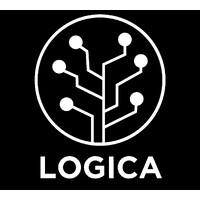
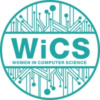
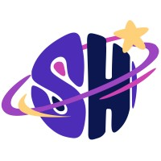
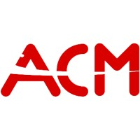

Education
Bachelor of Science in Computer Science
University of Wisconsin - Madison
Expected Graduation: May 2026
Relevant Coursework:
- Junior Year: Introduction to Artificial Intelligence and Introduction to Computer Engineering.
Bachelor of Science in Computer Science
University of Illinois - Chicago
August 2022 - May 2024
Relevant Coursework:
- Freshman Year: Program Design 1 and 2, Discrete mathematics, Calculus 1 and 2.
- Sophmore Year: Data Structures, Programming Practicum, Statistics 1, Calculus 3, Linear Algebra, and Physics 1.
Extra-Curricular Activities

Community Coordinator and Outreach Chair
Latinx Organization for Growth in Computing and Academics
July 2023 - May 2024
- Managed the organization's email, event-related forms, room booking communications, and external organization relationships.

Newletter Chair
Women in Computer Science
May 2023 - May 2024
- Crafted bi-weekly newsletters to inform WiCS Members about upcoming programs, workshops, and initiatives to increase engagement.

Experience Organizer
Sparkhacks
September 2023 - Febuary 2024
- Helped orchestrated a student-run hackathon that had 300 participants collaborate, innovate, and compete over 2 days and a series of 4 prompts.

Flourish Orgamizer
Association for Computing Machinery
May 2023 - September 2023
- Flourish was an open-source conference hosted at UIC.
Member
Engineering for a Sustainable World
March 2023 - May 2023
- Help ESW build a structure for their Hydroponics system.